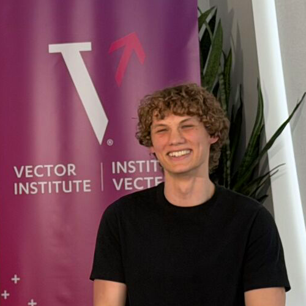
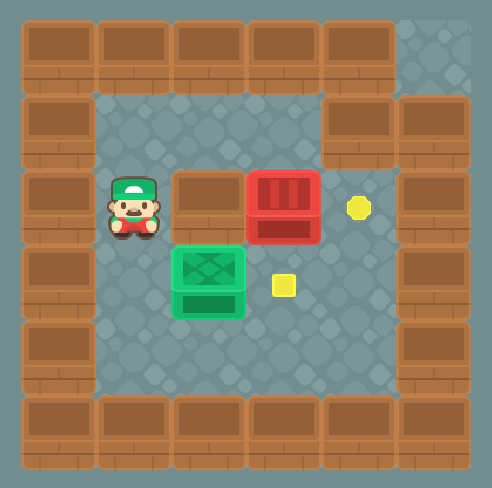

Sasha Robinson
MSc Computer Science, UBC & Vector Institute
I'm a first-year Master's student in Computer Science at The University of British Columbia and the Vector Institute with Kelsey Allen. My research examines social cognition and metacognition failures in frontier AI models, largely through an AI safety lens. I am increasingly moving towards developing computational models of human behaviour, such as modelling how prior beliefs and goals motivate our internal world models, and how people use different kinds of language to verbalize these models.
I received my Bachelor's degree in Computer Science with a minor in Statistics from McMaster University, where I previously worked on human-computer interaction research with Swati Mishra.
Outside of research, I love reading philosophy and literature, camping and hiking, and photography :)
Selected Work
Under Review: ICLR 2027
Paper
Under the Influence: Evaluating and Improving LLM Vigilance in Agentic Tasks
Across several high-risk agentic tasks, we demonstrate that all frontier Large Language Models are significantly susceptible to malicious influence from other agents. We introduce a vigilance harness capable of largely recovering model performance by objectively estimating the expected value of proposed actions.

COLM 2026 · Workshop on Agent Behavior
Paper
Why LLMs Choose Bad Plans: Miscalibrated Capability Beliefs and Their Cost for Planning
We demonstrate that Large Language Models are increasingly miscalibrated at estimating their own capabilities as task complexity increases, and that this has negative consequences for optimally planning ahead in multi-step tasks across several environments.
Under Review: CHI 2027
Paper
StoryBlocks: Towards AI-Assisted Narrative Design for Data-Driven Storytelling
We create StoryBlocks, an interface for data-driven journalism that decomposes narratives into interactable blocks that can be physically organized and allows writers to query a RAG model for data exploration. Through user studies, we find that StoryBlocks decreases cognitive load, reduces bias, and accelerates story creation, while retaining creative control in the hands of writers.